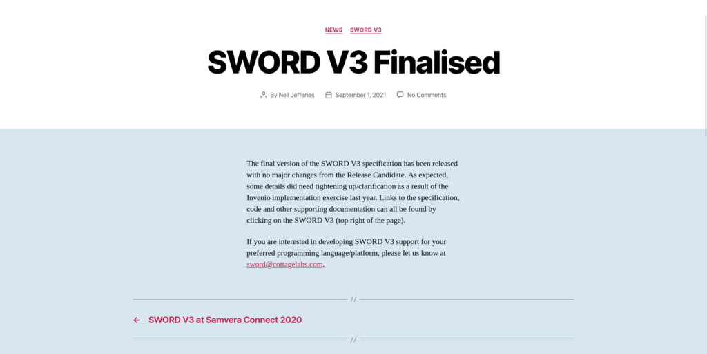

SWORD
In 2011 Jisc in the UK identified the need for a repository deposit protocol, which came to be SWORD. Soon after that more advanced deposit use cases became apparent, and Cottage Labs took over as technical lead for the specification and have driven it forward through 2 subsequent versions.
Challenge
Before SWORD there was no standardised way of depsositing individual digital objects in repositories; a machine-to-machine counterpart to the manual deposit forms of the early repositories. The aim was to replace that, and to then support the ongoing integration between scholarly systems supporting this kind of point-to-point transfer. The primary use case was CRIS systems, which were increasingly being used as front-ends to repository deposit.
